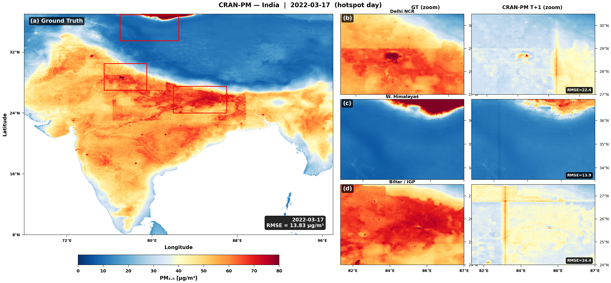
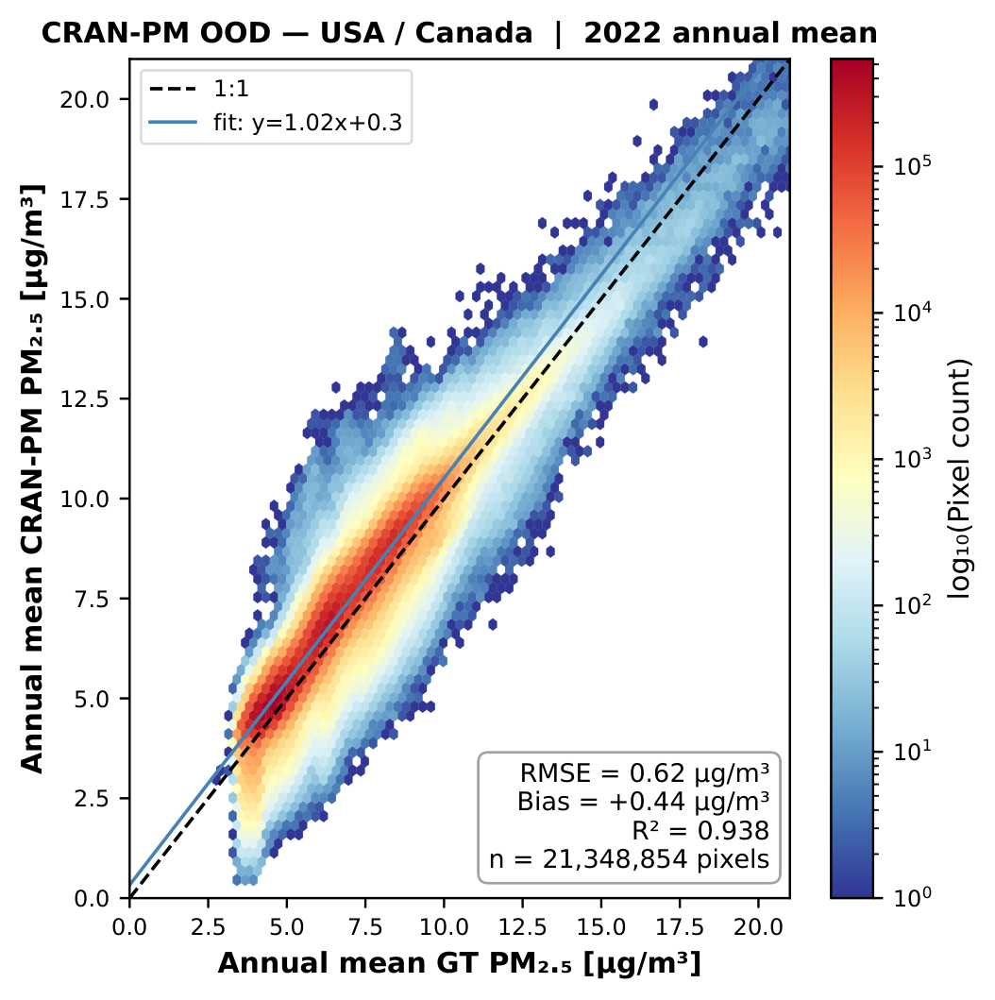
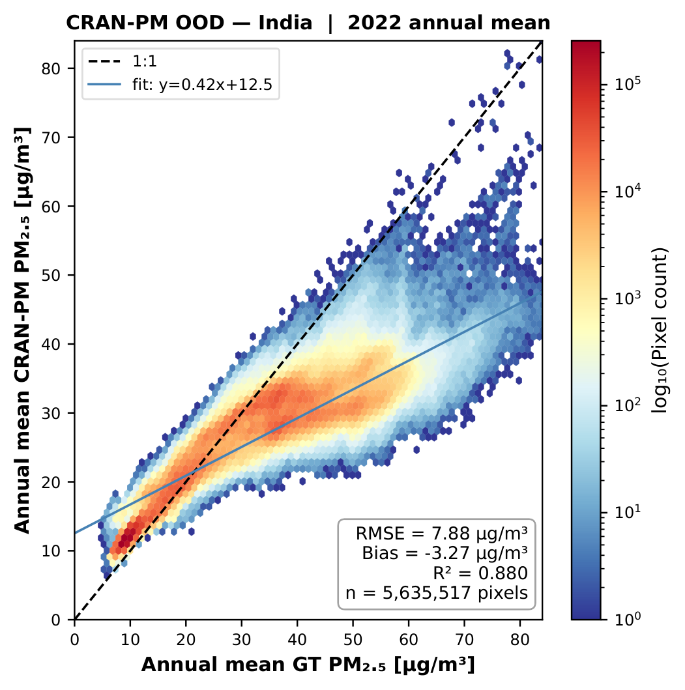

Zero-Shot Transfer
Generalisation Beyond Europe
Trained only on Europe, CRAN-PM transfers zero-shot to unseen continents — capturing wildfire plumes and pollution hotspots without any fine-tuning.

Zero-Shot Transfer to USA/Canada (2022-09-18, Wildfire Episode)
Figure 8. Zero-shot prediction during a major wildfire episode. CRAN-PM identifies the smoke plume extent and intensity despite never seeing North American geography during training.

Zero-Shot Transfer to India (2022-03-17, IGP Hotspot Day)
Figure 9. Zero-shot transfer to India capturing the persistent pollution belt across the Indo-Gangetic Plain. The model resolves the sharp gradient at the Himalayan foothills where pollutant transport is blocked by topography.

Annual Mean Scatter (2022)
Figure 10a. Density scatter plot of predicted vs. observed annual mean PM2.5 for the USA/Canada domain (2022).

Annual Mean Scatter (2022)
Figure 10b. Density scatter plot for the India domain (2022). Despite extreme PM2.5 levels (>150 μg/m³), CRAN-PM maintains strong correlation without fine-tuning.